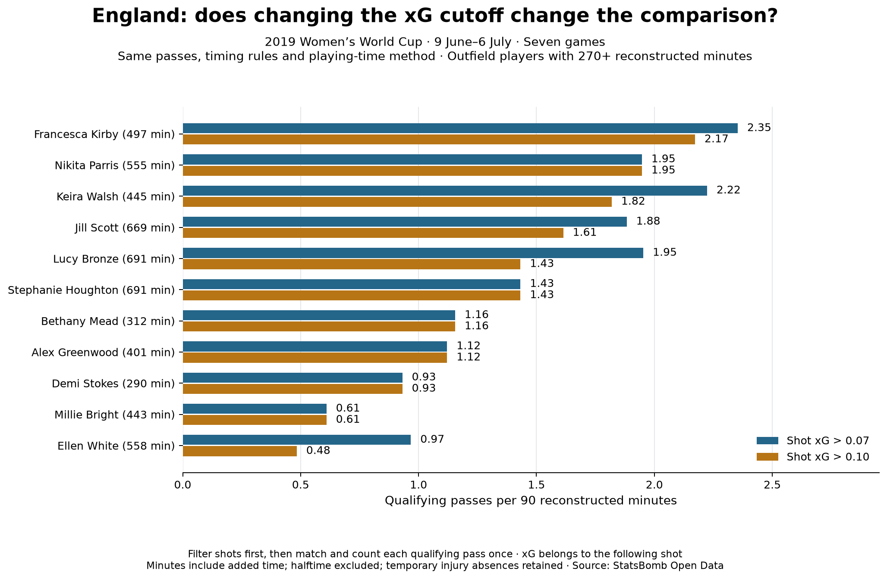
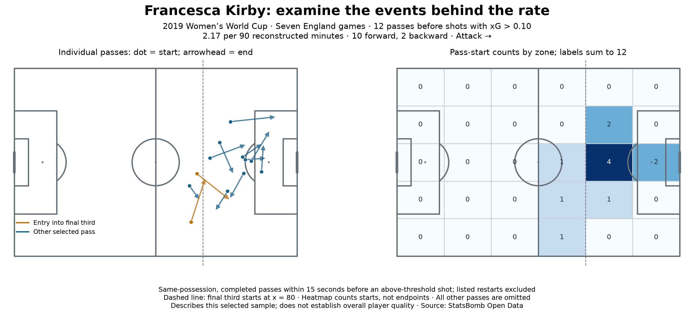
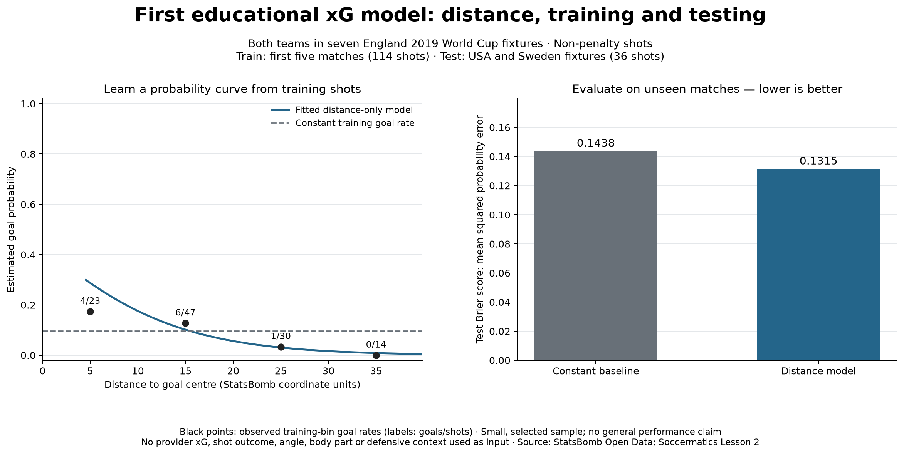

Applied research / 2019 Women’s World Cup
England’s attacking
passing involvement.
Who passed shortly before shots—and how does the answer change with playing time, shot quality and location?
Guided portfolio project · In progress
01 / Compare carefully
The definition changes the comparison.
Totals describe contribution. Per-90 rates describe frequency while playing. Testing two shot-quality cutoffs reveals which observations depend on the chosen definition.

Kirby stays prominent in this sample.
At xG > 0.10, Kirby records 12 qualifying passes and 2.17 per reconstructed 90, compared with Bronze’s 11 and 1.43. Their roles and opportunities differ; this does not establish who is the better passer.
98 qualifying passes
| Player | Passes | Per 90 |
|---|
02 / Inspect the events
Inside the final third is not an entry into it.
A summary rate needs football context. Kirby’s 12 selected passes include nine starts already inside the final third, but only two entries from outside.

Within this selected sample, Kirby’s involvement was concentrated in attacking areas. It does not establish her full passing style, an assist total or causal chance creation.
03 / Learn to model
A first xG model, with an unseen test.
A separate educational exercise learns goal probability from distance. It uses 114 training shots from five matches and 36 held-out shots from two matches. StatsBomb xG is not an input.
Explore the fitted curve
Change the shot distance.
The slider stays within the training distance range. Coordinate units are not measured metres. Angle, headers, defenders and goalkeeper position are not modelled.
Evaluate probabilities, not just a convincing curve.
The distance model’s test Brier score was 0.1315, versus 0.1438 for a constant training-goal-rate baseline. Lower probability error is better.
Only 36 shots were tested. This is a teaching example, not a validated scouting model or evidence of reliable general performance.
Inspect the model code ↗
04 / Make it inspectable
Study the method.
Reproduce the result.
The project preserves selected event IDs, definitions, reconstructed playing intervals, raw-input hashes and saved evidence checks. The code and documentation can be reused under the project licence; source data and logos retain their own terms.
Browse the public repository ↗